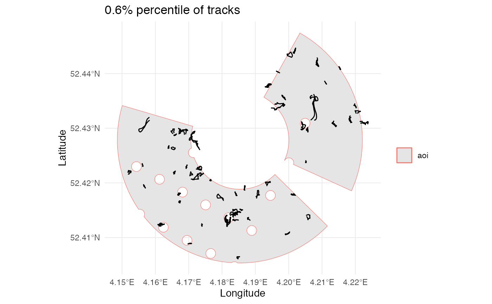
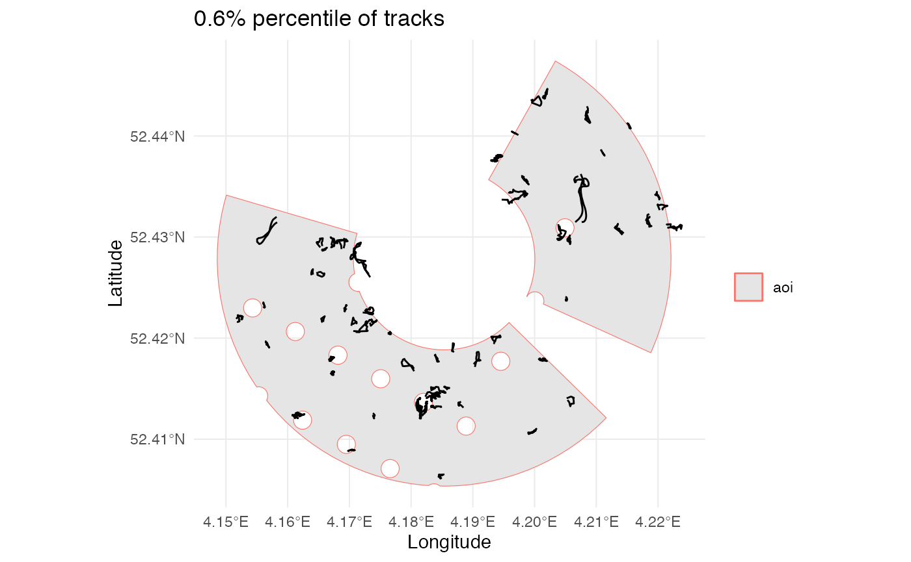
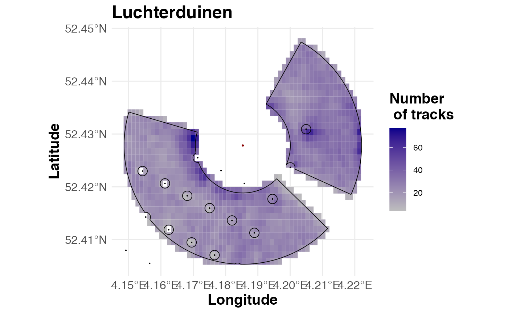
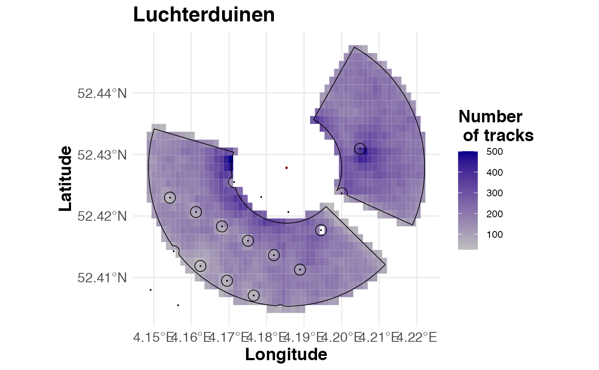

aa-processing
aa-processing.Rmd1.1 Settings and filenames
Here all required filenames, radar information and processing settings are specified
## File names
## Bird tracks
radar_filename <- "lud_bird-tracks_bare_w1_06-20.csv"
## Radar masking intensity of the horizontal radar
mask_filename <- "lud_hor_landmask_06-20.csv"
## ERA5 data
ERA5_filename <- "lud_ERA5_10m-windcomp_06-20.csv"
## Turbine locations (all Dutch offshore turbines)
# turbine_filename <- "D:/SURFDrive/R/shapefiles/turbines_en_ohvs.shp"
turbine_filename <- "turbines_en_ohvs.shp"
## General
## Area name
area_name <- "Luchterduinen"
## Start and end time of data (hourly resolution, UTC)
data_start_time <- ymd_hms("2020-06-01 00:00:00", tz="UTC")
data_end_time <- ymd_hms("2020-06-07 23:00:00", tz="UTC")
## Radar coordinates [degrees]
r_lon <- 4.185345
r_lat <- 52.427827
## Projections
wgs84_epsg <- 4326
loc_epsg <- 23095
wgs84_proj <- "+proj=longlat +datum=WGS84 +no_defs "
loc_proj <- "+proj=tmerc +lat_0=0 +lon_0=5 +k=0.9996 +x_0=500000 +y_0=0 +ellps=intl +towgs84=-87,-98,-121,0,0,0,0 +units=m +no_defs"
radar <- sf::st_sfc(sf::st_point(c(r_lon, r_lat)),crs=4326)
## Module 1 parameters
## Step 1
## Set the minimum and maximum distance from the radar for reliable bird detection [m]
mid <- 1000
mad <- 2500
## The radar is situated near an offshore windfarm
## Corner of the radar window the turbine blocks the radar
## Corner of overlap between the horizontal and vertical radar (few horizontal-only tracks)
b_corners <- rbind(c(287,30),
c(115,135))
## Turbine names (for coordinate extraction from main file)
turbine_names <- "Luchterduinen"
## Turbine mask: circle radius
turb_exclusion_rad <- 100 ## [metres]
## Step 2
## Minimum and maximum airspeed [m/s]
min_airspeed <- 5
max_airspeed <- 30
## Percentiles to visualize for DoT threshold
dot_percs <- seq(0.002,0.02,0.002)
## Module 2 parameters
## Step 3
## Minimum time interval between consequtive observations [s].
## This much shorter than the radar rotation speed to allow for differences in observation time (10%)
min_time_inter <- 1.2/10
## Module 3 parameters
## Step 5
## Resolution of spatial raster for detecting spatial bias [m]
raster_res <- 1001.1 Data loading and class-converting
Should be user defined as this is highly specific to the user input and requirement. Perhaps there can be an “import function” for uvaRR that converts these variables from character strings automatically, but this is not high-priority
## Load in tracking data
#tracks_all <- fread(file=radar_filename)
load('../data/tracks_all.rda')
## Data contains two timestamps: the start and end of each track
## Convert timestamps (characters) into POSIXct objects, with timezone = UTC
tracks_all[,timestamp_start := ymd_hms(timestamp_start, tz="UTC")]
tracks_all[,timestamp_end := ymd_hms(timestamp_end, tz="UTC")]
## Convert trajectory into spatial class
tracks_all <- st_as_sf(tracks_all,
wkt="trajectory",
crs=wgs84_epsg)
tracks_all <- as.data.table(tracks_all)
# sample for testing
#tracks_all <- tracks_all[sample(1:nrow(tracks_all),10000),]
## Location specific: load in turbines
## Load in turbines
#all_turbs <- as.data.table(st_read(turbine_filename))
load('../data/turbines.rda')
all_turbs <- as.data.table(turbines)
## Our file contains data for all offshore turbines, so subset to the right wind farm
turbines <- all_turbs[which(all_turbs$NAAM %in% turbine_names),]
rm(all_turbs)
## Convert coordinates into geometry to WGS84
turbines[,geometry:=st_transform(geometry,crs=wgs84_epsg)]2.1 Sub-setting based on prior knowledge
2.1.1 Spatial filtering
We apply the spatial filter by setting up an area of inclusion (AoI) geometry, which will be used to identify tracks outside of it to be removed. Three different filters can be used: - inclusion_ring: include region between a minimum and maximum distance from the radar location. - exclusion_angle: - exclusion_location:
This part is generally required, and setting up the AoI can be adopted into a function (minus the turbines, which is too specific imo).
area_of_inclusion <- roi(location=c(4.185345,52.427827),
distance=c(mad,mid),
crs=loc_epsg,
excl_angles=b_corners,
excl_geom=turbines,
excl_buffer=100,
verbose=F
)


## Add a tag to the turbines for whether they are in the proximity of the radar (bbox of AoI) mostly for plotting
aoi_bbox <- st_as_sfc(st_bbox(area_of_inclusion), crs=loc_epsg)
turbines[,near_aoi:=sapply(turbines[,geometry],st_within,y=aoi_bbox, sparse=FALSE)]This inclusion area can now be used to subset the data
## Include all tracks that cross the zone of inclusion
tracks_all[,intersects:=sapply(st_transform(st_zm(trajectory), crs=loc_epsg), st_intersects,
y=st_transform(area_of_inclusion, crs=loc_epsg), sparse=FALSE)]
## Filter tracks
tracks_step1 <- tracks_all[intersects==TRUE,]2.1.2 Biological filtering
We have two track-specific filters
At this point we need to calculate several track parameters
tracks_step1 <- movement(x=tracks_step1,
metrics=c('n','duration', 'length', 'groundspeed', 'displacement', 'direction','dot'),
crs=loc_epsg)
#> [1] "computed duration"
#> [1] "computed length"
#> [1] "computed groundspeed"
#> [1] "computed displacement"
#> [1] "computed direction"
#> [1] "removed columns: 0"Minimum and maximum airspeed
Firstly we will look at the average airspeed of each track, and filter airspeeds lower and higher than biologically relevant.
load('../data/era.rda')
tracks_step1 <- weather(x=tracks_step1,
era5=era,
variables=c("U10m","V10m"),
unit="hours")
tracks_step1[,airspeed := mapply(get_airspeed, groundspeed, direction, U10m, V10m)]
tracks_step1 <- tracks_step1[airspeed>=min_airspeed & airspeed<=max_airspeed,]2.1.3 Non-biological movement
Secondly we identify non-biological movement (low displacement over time, or DoT) which is often related to clutter tracks. The threshold for what DoT is considered too low has to be set manually by the researcher through visually inspecting the data.
dot_perc_vals <- get_dot_percs(x=tracks_step1, probs=seq(0.002,0.02,0.002), context=area_of_inclusion)
 



Based on the visualization, a stdp threshold has to be set
dot_threshold <- dot_perc_vals["1%"]
tracks_step2 <- tracks_step1[dot > dot_threshold,]2.2 Improving the quality of bird tracks
Erroneous points exist within some tracks, identifiable by a very short time-interval between those points and the next/previous point. Identify these intervals and remove both points involved with that interval, as there is no way to tell which of these two is faulty
## Copy tracks for last processing module
error_points <- fix_geom(x=tracks_step2,
dt=min_time_inter)
#> [1] "calculate trajectory time interval"
#> [1] "identify trajectories with wrong points"
#> [1] "identify the correct points in the trajectories"
#> [1] "identify if the first or last point is removed"
#> [1] "trajectory corrected"
#> [1] "trajectory time corrected"
#> [1] "trajectory time interval corrected"
#> [1] "timestamp_end corrected"
#> [1] "duration corrected"
#> [1] "displacement corrected"
#> [1] "direction corrected"
#> [1] "n corrected"
#> [1] "length corrected"
#> [1] "groundspeed corrected"
#> [1] "airspeed corrected"
tracks_step3 <- tracks_step22.3.1 Detecting temporal NOB
## Read in our NOB variable: masking data
load('../data/landmask.rda')
mask_data <- landmask
## Convert timestamp into POSIXct
mask_data[,timestamp:=ymd_hms(timestamp, tz="UTC")]
tracks_step3 <-nob(x=tracks_step3,
m=mask_data,
unit='hour')
tracks_step4 <- tracks_step3[!(masked),]2.3.2 Detecting spatial bias
using original function used by Jens
e <- st_transform(area_of_inclusion,crs=loc_epsg) %>%
st_buffer(2*raster_res) %>%
st_transform(st_crs(area_of_inclusion)) %>%
vect() %>%
ext()
track_raster <- track_density_rast(data=tracks_step4[,trajectory],
crs=loc_proj,
e=e,
resolution = raster_res)Visualization of the raster
# ## First visual inspection. Convert the data to a data.frame for plotting. Use the spatial mask set in step 2.1.1 to remove "dead" cells
fig_rast_data <- terra::as.data.frame(mask(track_raster,vect(area_of_inclusion)),xy=TRUE)
setnames(fig_rast_data, c("x","y"),c("lon","lat"))
ggplot()+
geom_tile(data=fig_rast_data, aes(x=lon,y=lat,fill=tracks))+
geom_sf(data=area_of_inclusion, fill=NA, colour="black", lwd = 0.3)+
geom_sf(data=turbines[near_aoi==TRUE,geometry], colour="black", lwd = 0.1)+
geom_sf(data=radar, colour="darkred", shape=16, lwd = 0.7)+
scale_fill_gradient(low="grey", high="darkblue", name="Number\n of tracks")+
labs(x="Longitude", y="Latitude", title=area_name)+
theme_minimal()+
theme(title = element_text(size=15, face="bold"),
axis.title = element_text(size=15, face="bold"),
axis.text = element_text(size=12, face="bold"))
using an updated function
track_rasterB <- rasterizer(data=vect(tracks_step4[,trajectory]),
resolution=100)
# ## First visual inspection. Convert the data to a data.frame for plotting. Use the spatial mask set in step 2.1.1 to remove "dead" cells
fig_rast_data <- terra::as.data.frame(terra::mask(track_rasterB,vect(area_of_inclusion)),xy=TRUE)
setnames(fig_rast_data, c("x","y"),c("lon","lat"))
ggplot()+
geom_tile(data=fig_rast_data, aes(x=lon,y=lat,fill=tracks))+
geom_sf(data=area_of_inclusion, fill=NA, colour="black", lwd = 0.3)+
geom_sf(data=turbines[near_aoi==TRUE,geometry], colour="black", lwd = 0.1)+
geom_sf(data=radar, colour="darkred", shape=16, lwd = 0.7)+
scale_fill_gradient(low="grey", high="darkblue", name="Number\n of tracks")+
labs(x="Longitude", y="Latitude", title=area_name)+
theme_minimal()+
theme(title = element_text(size=15, face="bold"),
axis.title = element_text(size=15, face="bold"),
axis.text = element_text(size=12, face="bold"))
analysis of the raster based on GAM
Lastly, the spatial threshold should be set. This is based on the visualization of the gam again. In our example the gam curve itself is used to set the threshold. Here it is a bit more complicated to retrieve which cells cross the threshold. However I don’t know how useful a function for this would be still.